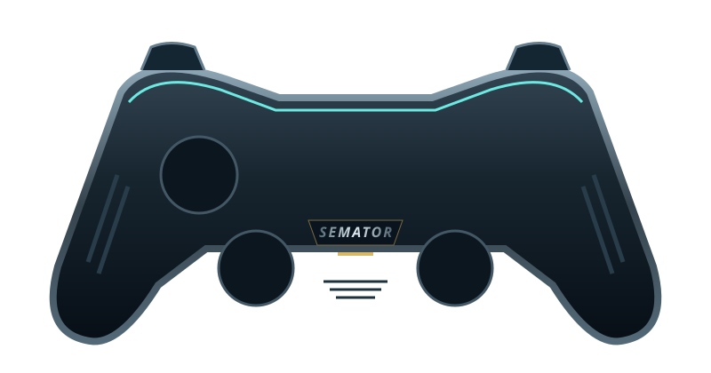

REDUCE DRAWING SLOWDOWN
Guarded 2x sprite and terrain-column drawing clock; logic, sound and waits stay original
Explore sprawling worlds with the original Timer C sampled soundtrack.
Joystick up jumps; fire shoots; Space is weapon action. Hold fire for the directional lightning weapon. Down + Space: wheel. Fire + Space: super weapon.

Select a button to see its action.
Original SemaTor controller illustration. Face buttons 1–4 correspond to south, east, west and north. A/B/X/Y in the table are SDL layout names; your pad’s printed labels may differ.
| Control | Action |
|---|---|
| Move / up to jump | |
| Move / up to jump | |
| Jump (joystick up) | |
| Fire | |
| Weapon action (Space) | |
| Weapon action (Space) | |
| Unassigned | |
| Fire | |
| Unassigned | |
| Unassigned | |
| Session menu (F11) | |
| SemaTor settings (F12) | |
| Unassigned axis / click | |
| Left stick click / Guide / extra buttons | Unassigned by default. Device or system Guide behaviour can vary. |
Default keyboard joystick mapping: arrow keys move, Left Ctrl fires and Space sends the original Space key. Original game keys remain available.
These are release defaults, not your saved remaps. Open F11 → Controls for this game for live mappings, or F12 → Controls to change them. Start and Back remain reserved for SemaTor menus. Mouse speed is adjustable. One active host gamepad is supported; two-player modes do not imply two simultaneous gamepads.
These are the exact identities used by the enhanced profiles in SemaTor 1.1.320. A recognised profile is not a promise that every level, option or graphics device has been tested.
Exact supplied profile edition. Its supplied gameplay log exposed a Vulkan allocation failure, fixed in 1.1.320. The live checkpoint save/preview/reload test also passes and resumes gameplay. Physical NVIDIA validation of the reported crash remains outstanding.
Turrican II (1991)(Rainbow Arts).stx · 1971338 bytes
Disk-image SHA-256: 35414bb1116a5dfae8f1f540e39414a529dca15ec3943bcef874b3b2f25d914e
Compare the extracted .st or .stx file, not its ZIP. Windows PowerShell: Get-FileHash -Algorithm SHA256 "your-disk.stx". Linux: sha256sum "your-disk.stx". A different disk hash may still contain a supported program; use the profile identities below.
| Edition / program | Identity | Bytes |
|---|---|---|
| Turrican II (1991, Rainbow Arts) BOOT | boot-sector SHA-1cb9e91829556704965fdd5e8b592d967e2572c7a | 512 |
Program SHA-1 covers the raw executable text before relocation, excluding its file header. Boot SHA-1 covers the decoded 512-byte boot sector. Neither is the checksum of the whole PRG, STX or ZIP. SemaTor’s library problem-report draft includes the executable SHA-1 and whether it is exactly recognised.
Download the edition/checksum list. If your edition is different, report its identity before assuming its enhanced profile is compatible.
Names match the release profiles, including experimental and practice options. Availability depends on the recognised disk edition. A matching filename alone does not verify an edition; untested releases may behave differently.
Guarded 2x sprite and terrain-column drawing clock; logic, sound and waits stay original
OFF / 16:9 / 21:9; includes verified-stage enemies, effects, collision and motion guidance
21:9 with verified-stage gameplay and effects; takes priority over 16:9
Verified terrain and observed sprite motion for framegen; unknown pixels use ordinary flow
Verified-stage enemies, projectiles and collision; included by the widescreen selector
Pre-YM sampled intro and 4x YM synthesis in gameplay; original music, effects and timing
ST water refraction, sky and tapered grass; sway and player bending; opening stage
Preserve lives on normal death; damage and timer remain separate
Stop the countdown without changing music or game speed
Block ordinary damage; timer and scripted deaths remain separate
Use the special attack without consuming its counter
Press F8 during gameplay to advance using the original stage transition
Android and dual-screen controls remain in testing. Touch layouts can differ from desktop gamepad defaults. Mega lo Mania’s Thor panel and direct-touch input need device validation; this guide does not certify every touch layout.